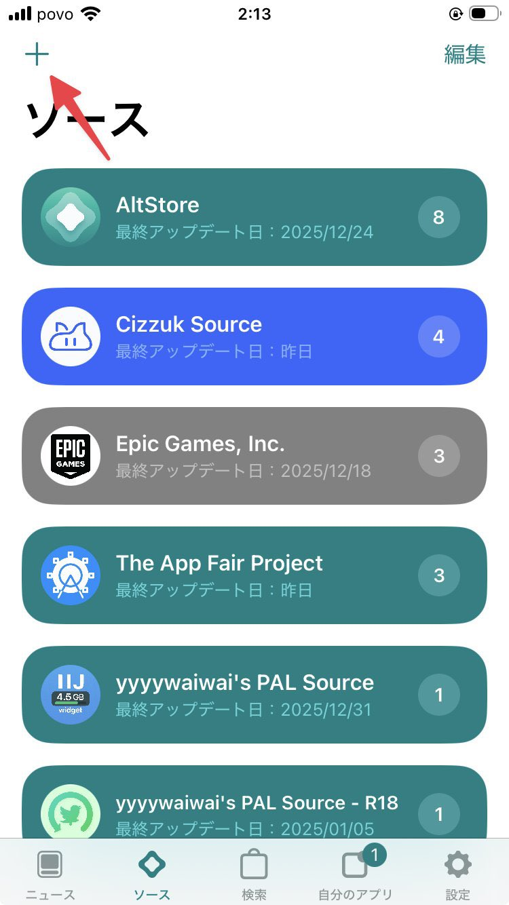
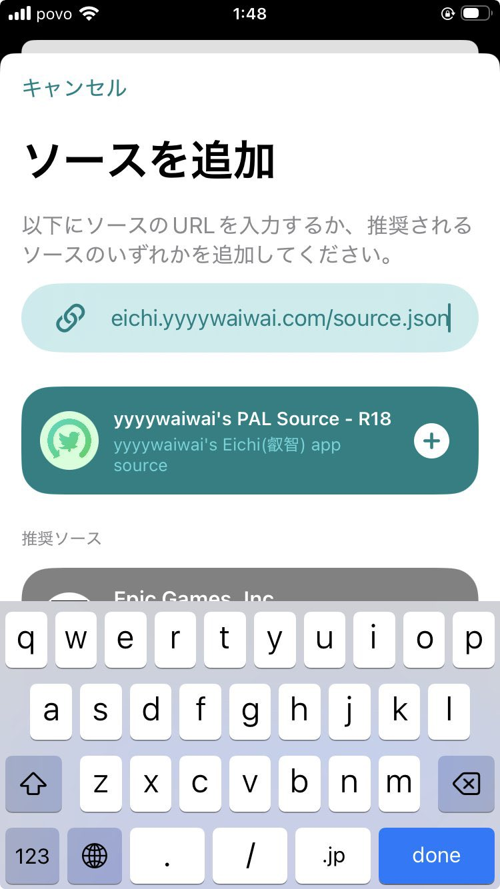
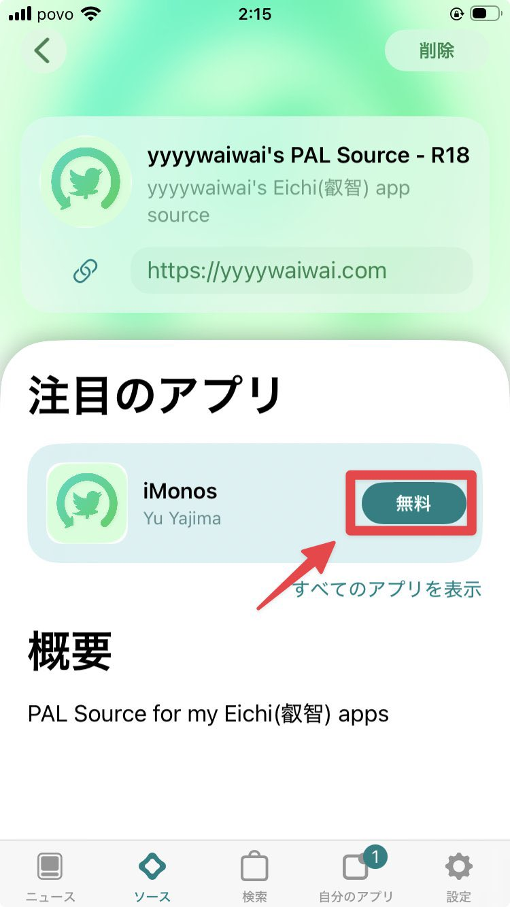

iMonsのリポジトリ登録
最後に、AltStore PALにiMons専用のソースを追加してインストールを完了します。
iMons R18ソースを追加
以下のボタンをタップすると、AltStore PALが自動的に開き、ソース追加画面が表示されます。
https://eichi.yyyywaiwai.com/source.json



1
ソース追加が自動で開かない場合
AltStore PALの「ソース」タブ画面の左上にある「＋」ボタンをタップします。
2
URLを入力して追加
コピーしたソースURLを貼り付け、「追加」をタップします。「yyyywaiwai's PAL Source - R18」が表示されれば成功です。
3
iMonsのインストール
追加したソースの中に表示されている「iMons」の「無料」ボタンをタップ。最終確認で「インストール」を選択すると完了です！